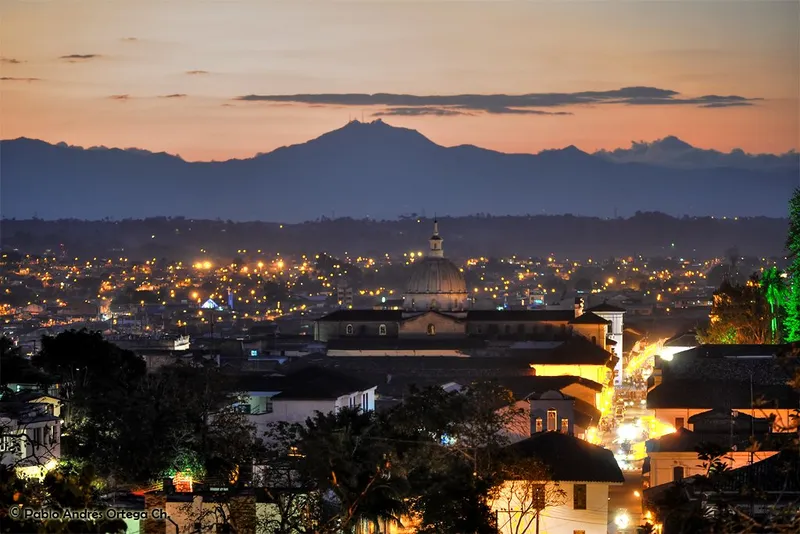

OKpolítico
OKpolíticoSerie de atentados con motobomba paraliza el tránsito en la vía Panamericana en Cauca

ACTUALIZADO · Un atentado con motobomba contra el peaje El Bordo en el Cauca, Colombia, paralizó la Panamericana y profundizó la violencia de grupos disidentes vinculados a las disidencias de las FARC, en medio de una escalada de ataques contra infraestructura crítica en la región.
Compartir por WhatsAppActualización 09:24 h
El pasado **viernes 14 de marzo de 2026**, un atentado con **motobomba** detonó en el **peaje El Bordo**, ubicado en el sur del departamento del **Cauca**, Colombia, sobre la **vía Panamericana**, causando daños materiales en las casetas de cobro y paralizando el tránsito en uno de los corredores más importantes del país. Según testigos, la explosión ocurrió alrededor de las **10:30 a.m.**, horas después de que autoridades locales reportaran el cierre preventivo del peaje por presiones de grupos armados. Este es el **segundo ataque en un mes** contra infraestructura vial en la zona: el **12 de febrero**, una motobomba impactó el peaje **El Mango**, también en el Cauca, sin dejar víctimas pero generando pánico y bloqueos prolongados. Las autoridades confirmaron que en ambos casos las estructuras afectadas **habían sido reconstruidas recientemente** tras ataques previos, lo que evidencia una estrategia deliberada de sabotaje.
Las **disidencias de las FARC**, específicamente el frente conocido como **‘Mordisco’** (autodenominado **Estado Mayor Central - Segundo Frente Carlos Pizarro**), son señaladas como responsables del atentado. Según informes de inteligencia citados por medios colombianos, este grupo —desvinculado del proceso de paz y operando en los departamentos del **Cauca, Nariño y Putumayo**— ha intensificado sus acciones contra **peajes, oleoductos y vías estratégicas** como forma de presionar al gobierno nacional y a empresas privadas. El objetivo, según analistas, sería **financiar sus operaciones** mediante extorsión y **sabotear la economía regional**, en un contexto donde el Estado ha reducido su presencia militar en zonas rurales. El último informe de la **Oficina de las Naciones Unidas contra la Droga y el Delito (UNODC)** en Colombia advirtió sobre un **aumento del 40% en ataques a infraestructura crítica** en 2025, vinculados a estos grupos.
✉️ Recibe lo importante del día en tu correo. Suscríbete gratis →El Cauca es uno de los territorios más afectados por la violencia en Colombia, con una historia reciente marcada por el conflicto entre el gobierno, grupos armados ilegales y comunidades indígenas. La región ha sido escenario de enfrentamientos entre **disidencias de las FARC, el ELN y bandas criminales**, además de ser zona de influencia de cultivos ilícitos. El **peaje El Bordo**, ubicado en el municipio de **Toribío**, es un punto clave para el comercio entre el Eje Cafetero y el Pacífico colombiano, y su repeated sabotaje amenaza con **desestabilizar la cadena logística** de alimentos y combustibles. Autoridades locales han denunciado que estos ataques buscan también **deslegitimar los acuerdos de paz de 2016**, al mostrar que las zonas desmilitarizadas se convirtieron en refugio para grupos que rechazan la reincorporación a la vida civil.
La respuesta oficial fue inmediata: el **Ministerio de Defensa colombiano** desplegó una **búsqueda activa de los responsables** y reforzó la seguridad en la zona con apoyo de la **Policía Nacional y el Ejército**. El presidente **Gustavo Petro** condenó el ataque en un comunicado, donde instó a los grupos armados a **dejar las armas y reanudar el diálogo**, aunque sin mencionar directamente a las disidencias. Por su parte, el **gobernador del Cauca, Wilder Aguilar**, declaró estado de emergencia en la región y anunció una **reunión de urgencia con alcaldes y líderes indígenas** para evaluar medidas de protección. Mientras tanto, la **Procuraduría General** abrió una investigación por **sabotaje a la infraestructura pública**, con posibles cargos por terrorismo. El **INE (Instituto Nacional de Vías)** informó que las reparaciones podrían tardar **hasta 15 días**, lo que agravaría los retrasos en el transporte de mercancías, ya afectado por huelgas de camioneros en semanas recientes.
El atentado ocurre en un momento crítico para Colombia, donde la **violencia armada** registra un repunte tras años de disminución. Según la **Misión de Observación Electoral (MOE)**, los primeros tres meses de 2026 han sido los más violentos desde **2019**, con **123 homicidios vinculados a grupos armados** (un 28% más que en el mismo periodo de 2025). El **Cauca**, junto con **Nariño y Arauca**, concentra el 40% de estos casos. Expertos como **Álvaro Villegas**, director del **Centro de Recursos para el Análisis de Conflictos (Cerac)**, advierten que estos ataques buscan **presionar al gobierno para que revierta políticas de sustitución de cultivos ilícitos** o negocie con grupos que no están en la mesa de diálogo. Mientras, la **Comisión Interamericana de Derechos Humanos (CIDH)** ha solicitado al Estado colombiano **medidas urgentes** para proteger a comunidades en riesgo, especialmente en zonas donde operan estos grupos. El próximo **15 de abril**, el Consejo de Seguridad de la ONU revisará el informe sobre Colombia, donde se incluirán estos datos como parte del análisis sobre la **desescalada del conflicto**.
El 31 de octubre, a las 6:00 a.m., una motobomba cargada con explosivos se detuvo a pocos metros de las casetas provisionales del peaje El Mango, en el sector de La Depresión, municipio de La Sierra. La explosión provocó una onda expansiva que obligó a suspender el tránsito por la vía Panamericana y dejó dos trabajadoras del peaje resultaron aturdidas, según reportes de las unidades militares desplegadas en la zona.
Este ataque marca la segunda vez en menos de un mes que el mismo punto de la carretera se vuelve blanco de violencia. El 12 de octubre, un vehículo con explosivos destruyó la infraestructura original del peaje, dejando al menos tres heridos. La nueva motobomba se produjo en medio de un recrudecimiento de las hostilidades en el Cauca, donde la población civil y la infraestructura estratégica se encuentran en conflicto abierto entre la Fuerza Pública y los grupos armados ilegales, las disidencias de las Farc y la guerrilla del Ejército de Liberación Nacional.
El Cauca, que recientemente celebró elecciones legislativas el 8 de marzo, vio reforzarse la presencia de la fuerza pública tras la elección de cuatro representantes, entre ellos dos del Pacto Histórico, uno del Partido Liberal y otro de la coalición Fuerza Cauca. A pesar de las amenazas de los grupos armados, las autoridades afirmaron que no se registraron hechos violentos durante la jornada electoral, aunque la región sigue siendo un foco de tensiones armadas.
El Ministerio de Transporte condenó de manera enérgica el atentado, calificándolo como un acto terrorista que atenta contra la vida de los trabajadores y la movilidad de la población. La ministra Elsa Noguera aseguró que el gobierno coordina con las fuerzas armadas para esclarecer los hechos y reforzar la seguridad en el corredor estratégico del suroccidente colombiano, prometiendo restablecer el tránsito una vez se verifiquen las condiciones de seguridad.
Las autoridades militares y policiales han mantenido una presencia permanente en el corredor vial, desplegando unidades de la Brigada 29 del Ejército Nacional y de la Policía Nacional para controlar el área y prevenir nuevos ataques. Se están llevando a cabo inspecciones técnicas y se ha establecido un cerco de seguridad a varios kilómetros del sitio para evitar acercamientos y permitir la entrada de equipos antiexplosivos, mientras se avanza en la identificación de los responsables y se evalúan medidas de seguridad adicionales.
Actualizado 08:45 h (centro de México). Información en desarrollo; OKpolítico ampliará esta nota con datos verificados y el video explicativo.
Sigue viendo
- 📺 La caída del sistema: el expediente de la elección de 1988
- 📺 Marcelo Ebrard: De jefe de gobierno a negociador del T-MEC bajo investigación
- 📺 1819 (I): El Espejismo de la Paz y la Redefinición Colonial
- 📰 Clima hoy: Sinaloa con 31° y Estado de México con 15°, las capitales más extremas
- 📰 Trump advierte a México con aranceles ante caravana de 2,000 migrantes
- 📰 León XIV insta a la justicia social en Argentina y se reúne con víctimas de abusos en Perú
Con información de
El Tiempo · Noticias Caracol · Noticias RCN · Pulzo · El Nuevo Siglo · ELHERALDO.CO · Ministerio de Transporte · Crónica del Quindio · HSB Noticias · La FM · UNODC Colombia · MOE Colombia · Cerac - Centro de Recursos para el Análisis de Conflictos · Procuraduría General de la Nación (Colombia)